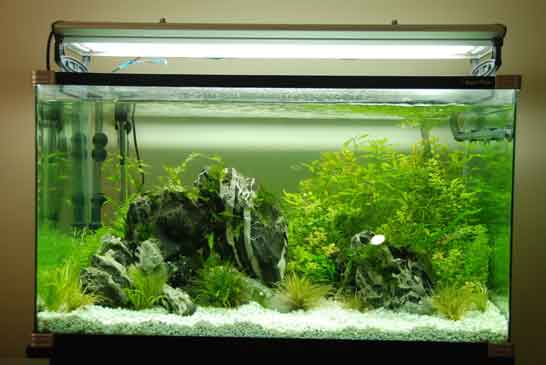

Setting up your new Aquarium
HOW DO I PROPERLY SET UP MY NEW AQUARIUM?

So you have all the gear but no idea? Before you start anything It is important that you carefully choose where you want to place the tank, make sure it is even ground and will support the tank's filled weight. Slanted floors can result in undue stress and crack the aquarium glass.
Hard, flat surfaces are ideal. Cabinets are popular and are a requirement for larger, heavy aquariums. For smaller aquariums (30 gallons or less) any sturdy, reinforced furniture with a flat surface can suffice.
Be sure that the chosen aquarium location can support the electrical requirement (lights, filter, and heaters). Is there a PowerPoint nearby? If not, is it possible to conceal an extension cord? The less electrical wires, the better. Water and electricity do not mix well together. Keeping your setup simple with a single power board and powerpoint is ideal.
Below is an aquarium equipment check list. You may have purchased none or all of the items below. We will cover each of the items in further detail down the page, including recommended products.
Equipment Check List
-
Aquarium
Larger aquariums are generally more stable for beginners. These Wetpets Aquariums
kits are an excellent choice for starting aquascapers.
-
Aquarium gravel
Gravel should be course enough to allow water flow but fine enough to encourage nitrifying bacteria. Creek Stones, coarse sands, and glass gravel are excellent choices. Avoid calcium & limestone based substrates.
-
Aquarium filter
Your aquarium filter should be rated to turn over at least 3-5x the aquarium volume every hour. Use the Volume Calculator below to work out the required GPH. For smaller aquariums, Hang-on-back filters are perfect. I recommend the Marineland Penguin Power Filters for their higher flow rate, reliability & ease of use.
- Replacement filter media
Ensure you have plenty of replacement filter cartridges. They will be replaced more frequently in the early stages of your aquarium. They will keep your water clear and debris free.
- Heater
A heater is essential to limiting disease. It also allows the keeping of tropical fish. EHEIM Jager heaters are widely regarded as reliable heaters at an affordable price point. Use the calculator to determine your required wattage and read down the page for more information.
- Other decorations (such as fake or real plants)
-
Aquarium Water Test Kit
A good quality test kit is very important. It will allow you to test for cycling before introducing fish. It will also alert you to toxic aquarium conditions and save your tanks inhabitants. The Freshwater Master Test Kit is a high quality test kit that allows you to test from PH, ammonia, nitrite and nitrate. Your LFS can test your water but not if they are closed or a distance from your house.
- Fish food
A quality fish food will result in brilliant, brightly colored fish. Fish should be fed at least twice a day, purchasing in bulk will provide the best value. Use a mixture of color enhancing flakes and frozen foods for more variety.
-
Aquarium Vacuum
The vacuum is the heart of your maintenance team. It will clear faeces and debris from the gravel. This will reduce nitrates & stress on your fish. If you are like me and hate spilling water over the floor & carpet get the Python No Spill Vacuum and never look back.
- Fish net
Fish nets are useful for removing dead plant matter, excess food and moving your live fish.
- Aquarium Glass Scrubber
The aquarium glass scrubber is essential. Always give your glass a quick clean before showing off your aquarium to friends and family.
- 5-gallon bucket

Cleaning the Gravel
- Once you have chosen the tank’s placement it is time to begin setting up the aquarium. Take your purchased gravel and pour it into a bucket. IT IS ESSENTIAL THAT YOU WASH THE GRAVEL. Many beginners forget to properly wash the substrate. This can lead to your brand new tank being cloudy for weeks on end.
- Take a hose with high pressure and spray the gravel/substrate directly in the bucket. When the bucket is filled vigorously wash the gravel by moving your hands in a circular motion. After a few minutes remove the dirty water in the bucket while keeping the gravel at the bottom. Repeat this process 4 to 5 times until the waste water is visibly clearer. Some substrates may continue to cloud the water after cleaning. This is nothing to be alarmed about. Fine and silty substrates will naturally settle in the aquarium over time. The cleaning process is beneficial in removing dust from storage and transport.

Placing the Substrate
- Gently place the cleaned gravel into the bottom of the aquarium. This will help avoid damage to the bottom glass and stiring any excess finer particles. A smaller scoop or bucket can assist in this process. The substrate should then be smoothed with your hands to create an even base at least half an inch thick. It is recommended to form a slight slant from the back of the aquarium toward the front. This gives the aquarium a nice perspective and the perception of a greater depth.

Filling up the Aquarium
- Fill up the tank with a hose pipe, (note if it is a small tank or you do not have a tap nearby you will have to use buckets).
- Use a water de-chlorinator after filling. Although there are no fish, chlorine and chloramines can build up over time. You will need a high quality dechlorinator for the life of your aquarium. It is a sound initial investment as you will need to use it every time you do a water change. Seachem Prime, API tap water conditioner, Tetra Aqua Safe & Kent Detox are all some of the most popular choices and each will do an excellent job.

Choosing the Right Heater & Filter
- Choosing the correct heater and filter can be difficult. Use this calculator to calculate necessary filter flow and heater wattage you will need for your aquarium.

Filter Material

- Gently clean out the filter material under the tap or in a bucket. As they have been stored in a warehouse or shopfront they contain dust and debris you don’t want in your tank. If your filter contains a carbon packet in wool, be careful not to rip this open.
- Also wash and clean any rocks and ornaments you will be putting into the tank. You will be surprised how much dust and dirt comes off, you don’t want that in your tank.
- Place the material back into the aquarium filter. If it is a hang-on filter you will need to manually fill up the resovoir to start the filter working. Hang-on filters have a handle on top of which allows changing of its flow rate. For cycling put it at the maximum.
- Do the same for a canister filter and ensure the baskets are closely stacked and the top is tightly locked in place to prevent leaks.

Heating and Lighting
- Two heaters are generally reccomended but in a smaller aquarium you can use one if there is a lack of space. A heater that will comfortably fit inside the aquarium is a good choice. Within reason higher wattage heaters are better as they will save power and put less strain on the heater.
- Stick the heater to the glass in your aquarium where there is good water flow and the least visibility. Turn it on by rotating the temerature knob anywhere between 74 and 80 degrees (23 to 27 celcius). An orange light should turn on while the heating element is active. This will help with the cycling process.
- Choose an appropriate light for the aquarium. Place the light on or above the tank and set a timer for no more than 8 hours a day.
- Enjoy your tank as it begins the process of building bacteria to support your eco-community!

Cycling
- At this point you will have to “CYCLE” the tank. This will promote the build up of de-nitrifying bacteria and is essential to setting up your new aquarium.
- It is important to monitor the aquarium during and after the cycle. This can be done with your own freshwater test kit. Most aquarium stores will also test your water for a small fee. If you do decide to test yourself, my recommendation is the API Freshwater Test Kit. There is a link to this test kit in the checklist above. A good quality test kit will be used through the life of your tank. It can alert you to early disaster and is an excellent investment that will end up saving you money.
- The cycling process will prevent any unnecessary loss or death of the aquariums first inhabitants. Please follow the next part of the guide by clicking the cycling link below.